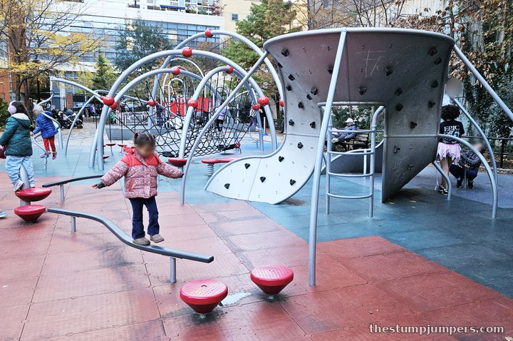
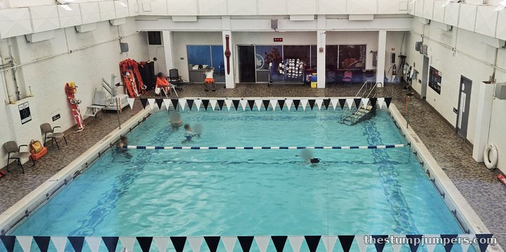
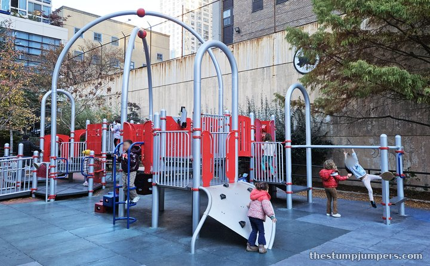
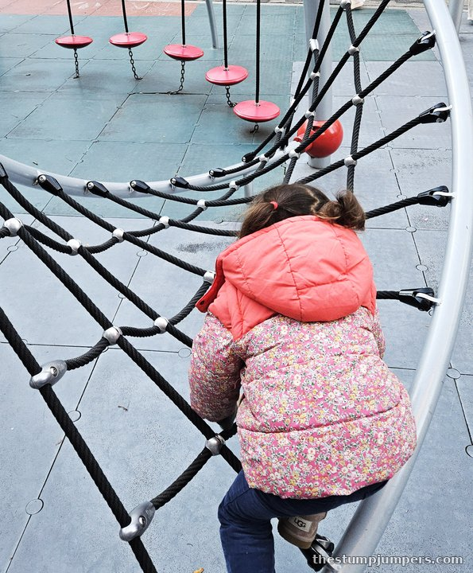
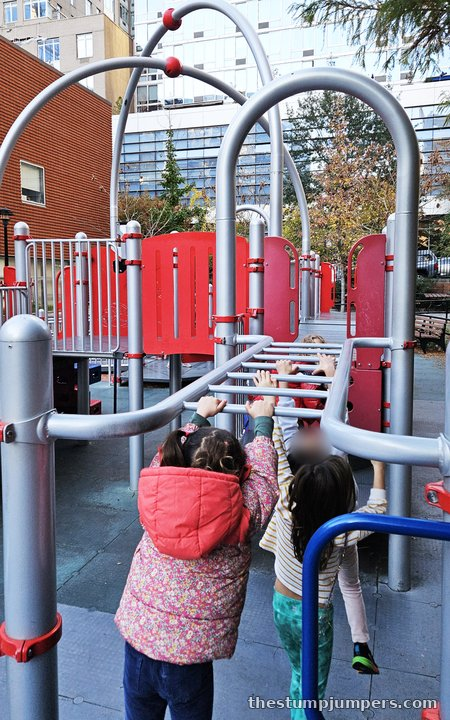
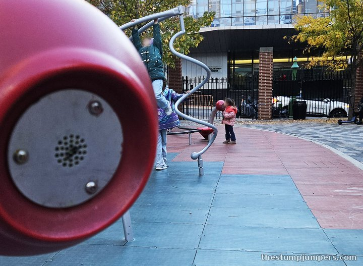
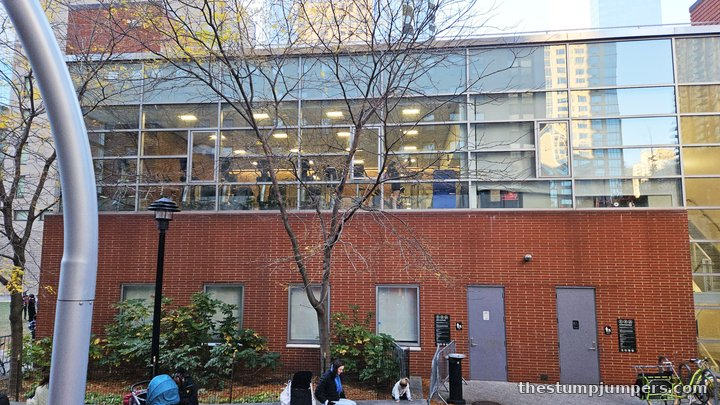

Gertrude Ederle Playground: The Point of Contention
The Stump Report
Stump average: 2.4 out of 5. Ranked #25 of 30 in NYC.

Gertrude Ederle Playground is part of the Gertrude Ederle Recreation Center, a city rec center with an indoor pool, a fitness room, a gym, and a basketball court. The playground is free for everyone, of course, but the rec center requires membership. Grown-ups pay $150 a year for access to every city rec center, pools included, or $100 without pools. Seniors pay $25. Kids and young adults under 25 get a free membership.

That's what makes this one score high for things to do: the kids play outside while a parent can sneak in a swim or a workout. The other caregiver should remain outside on needle duty.
See, as a kids' playground, it's a bit controversial. A 200-bed women's shelter opened about a block away in May, and over the summer neighbors reported used hypodermic needles turning up in the playground. It made the local news, and at least one daycare I know of switched playgrounds.
Moving on. The equipment looked very familiar. It's made by Landscape Structures, the same company as Chelsea Park Playground. Not my favorite manufacturer: too much plastic, and the colors fade. One side, toward 59th Street, must have come from their deluxe catalog, because it has much less plastic and more metal and rope. Same periscope as Chelsea Park, slightly less scratched up. I still prefer a more classic playground. This one still looks new, but certain parts show it isn't aging well.


The monkey bars are low and close together, perfect for smaller kids. My 4-year-old was able to swing across them. They were the most popular feature among all the kids.

The wavy climbing wall is pretty cool, and popular among the big kids. Including this dad.
Those talking tubes… still in every single playground, and I still haven't found one that works. Kids don't even try. I think some of them laughed at me when I gave it a shot.

My daughter pointed out there are no swings at all in the park. A tantrum nearly ensued. It's not like I could take her into the pool to make up for it, since we aren't members. Back to the monkey bars.
The splash pad is small, but it's a fun little river and waterfall. Like a super stretched out drinking fountain.
The crowd is mostly nearby daycares during the week, and families from the surrounding high-rises on weekends.
This is not a secure playground, so keep an eye on flight risks. There are two wide, busy sets of gates, to 59th and 60th Streets, plus doors into the rec center.

There are bathrooms right next to the playground, in the rec center building. Condition: the low side of mediocre, but you can't beat the location. There are also two picnic areas, one on each side of the playground.
The place is named for the first woman to swim the English Channel, which is a strange reference to the fact that a public bathhouse stood on this spot more than 100 years ago.
Playground hoppers, take note: West End Park and Waterline Square Park are each just a few blocks away, so you can hit all three in one trip.
Verdict: the equipment isn't anything original, but kids seem to have a lot of fun here. Since it's part of a little-known rec center, it's an interesting stop for both kids and adults.
Biking & Running There
By bike: that's how we came, and there are a few small playgrounds nearby to hit on the same trip. The Hudson River Greenway is a few blocks west. By train: 1, A, B, C, or D to 59 St–Columbus Circle, then walk two blocks west on 60th Street.
More to Do Nearby
- Waterline Square Park about 0.2 mi away · 2.8
- West End Park about 0.2 mi away · 1.8
- Erie Canal Playground about 0.3 mi away · 2.8